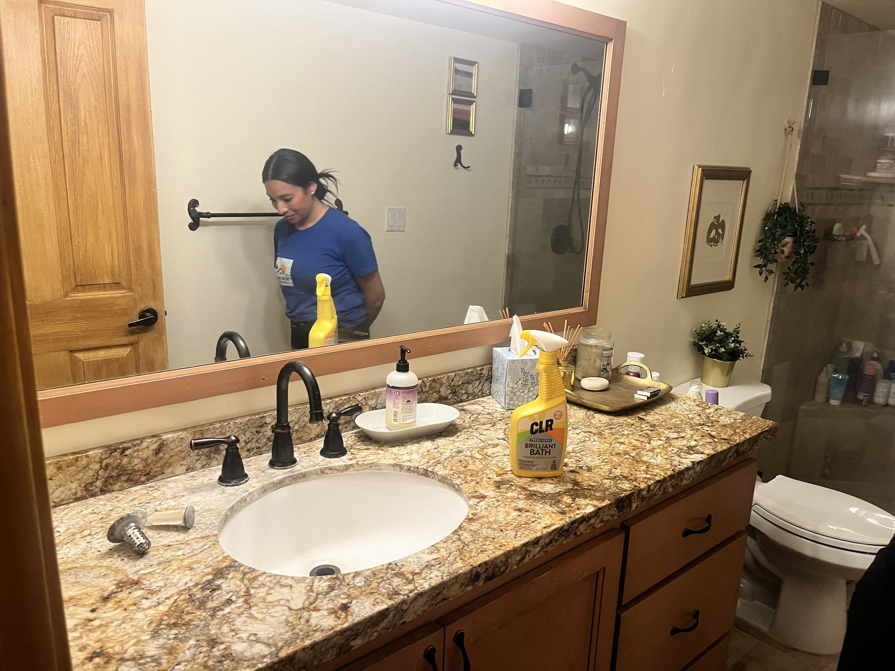
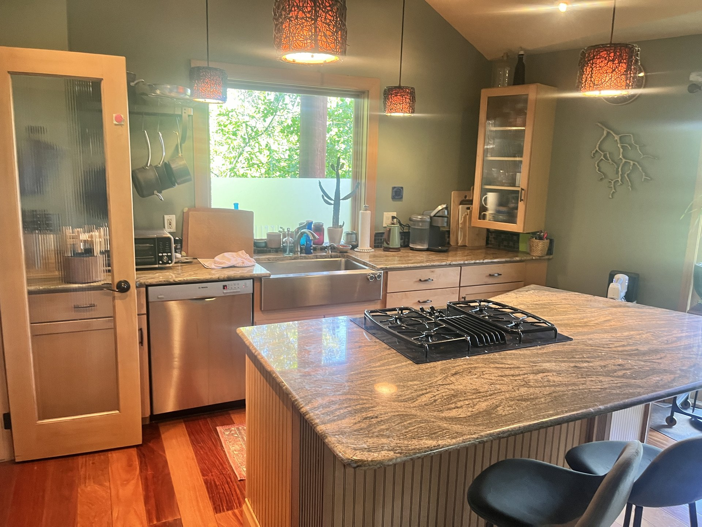
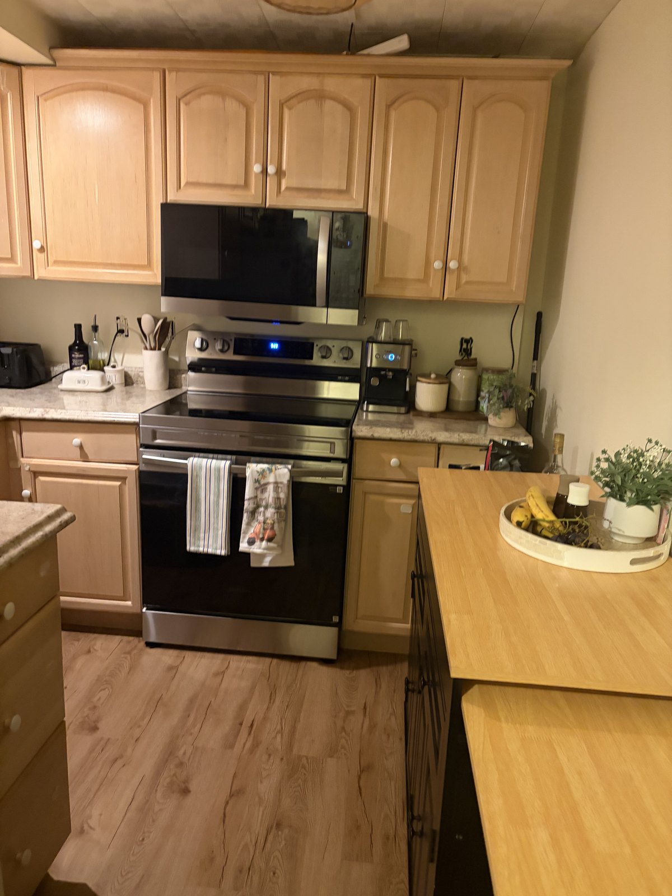

Sun Ray made our place feel fresh, calm and ready again. Communication was easy and the quote was clear.Park City homeowner
Residential cleaning in the Wasatch Back
Park City, Heber and Midway homes that truly shine.
Sun Ray Cleaning Services is a female-owned local team trusted for eco-friendly house cleaning, deep cleans, recurring service, move-in and move-out cleaning, and Airbnb turnovers across northern Utah mountain communities.
Insured cleanersEco and pet-safe optionsTransparent pricing
5.049 Google reviews
Trusted locallyPark City, Heber, Midway and Wasatch Back homes

Open 7:30 AM - 8:30 PM
No-surprise cleaning quotesShare rooms, square footage, pets and priorities for a practical estimate.
Professional cleaning services
Everything your home needs to feel fresh, reset and guest-ready.
Our highest-demand services match the local market: short-term rental turnovers, second-home care, move cleaning and reliable recurring house cleaning.
Airbnb and VRBO turnover cleaning
Guest-ready turnover cleaning for Park City, Deer Valley, Heber and Midway rentals.
View serviceWeekly and biweekly recurring cleaning
Consistent maintenance for busy homes, second homes and family spaces.
View serviceOne-time deep cleaning
Detailed resets for kitchens, bathrooms, baseboards, fixtures and seasonal buildup.
View serviceMove-in and move-out cleaning
Move-ready cleaning for buyers, sellers, renters, landlords and agents.
View serviceLocal service areas
Built for Park City, Heber Valley, Midway and Salt Lake homes.
Each location page is written around the neighborhoods, cleaning needs and search intent that matter locally.
Park City cleaning services
Vacation rentals, luxury homes and recurring house cleaning from Old Town to Deer Valley and Canyons Village.
Explore Park CityHeber City cleaning services
Family homes, Red Ledges properties, move cleans and Heber Valley second homes.
Explore Heber CityMidway cleaning services
Cabins, vacation homes, seasonal openings and recurring home care near Homestead and Deer Creek.
Explore MidwaySalt Lake County cleaning services
Residential cleaning for valley homes, condos and townhomes with clear scheduling.
Explore Salt Lake County


Why choose us?
Local cleaners who understand mountain homes and guest schedules.
Park City and Heber Valley homes deal with dry-air dust, snow-season grit, hard-water buildup, pets, guest turns and seasonal vacancy. Our team works from a clear checklist so your home feels calm, clean and ready.
- Transparent pricingNo-surprise quotes based on home size, condition, frequency and priorities.
- Eco-friendly optionsPet-safe and low-tox products available for families, hosts and second-home owners.
- Local service knowledgeNeighborhood-aware scheduling for Deer Valley, Old Town, Canyons Village, Red Ledges and Midway.
From the blog
Helpful guides for local homeowners and hosts.

Airbnb/VRBOComplete Guide to Airbnb & VRBO Cleaning in Park City
A practical turnover guide for owners and hosts who need guest-ready cleans in Park City.
Read guide
PricingHow Much Does Airbnb Cleaning Cost in Park City?
What affects turnover pricing, from beds and baths to laundry, supplies and same-day windows.
Read guide Deep cleaning
Deep cleaningPost-Ski-Season Deep Clean Checklist for Park City Rentals
A room-by-room checklist for removing winter grit, dust and guest-season buildup.
Read guideQuestions homeowners ask
Helpful answers for cleaning quotes and scheduling.
What areas does Sun Ray Cleaning Services cover?
We serve Park City, Heber City, Midway, Salt Lake County, Kamas, Oakley and nearby northern Utah communities.
Do you clean Airbnb and VRBO rentals in Park City?
Yes. We provide turnover cleaning for Park City, Deer Valley, Canyons Village, Old Town and nearby communities.
How do I get the fastest quote?
Send your city, service type, bedrooms, bathrooms, square footage, timing, pets and must-clean areas.
Do you use eco-friendly products?
Yes. We offer eco-friendly and pet-safe cleaning options for families, pets, vacation rentals and mountain homes.
Service area map
Cleaning service across Summit and Wasatch County.
Sun Ray focuses on Park City, Heber City, Midway and nearby mountain communities where local schedules, weather, vacation homes and guest turnovers need reliable cleaning support.
Summit County
Wasatch County
Customer testimonials
Warm, reliable cleaning homeowners can feel good about.
Preview testimonial language for the GPT redesign. Replace with approved Google or Webflow reviews before production publishing.
The team understood the turnover window and left the home guest-ready. It was exactly the kind of detail we needed.Short-term rental host
Reliable, friendly and thorough. The house looked great before family arrived for the weekend.Heber Valley homeowner
Ready for a cleaner space?
Get a quick, transparent quote.
Share the home size, service type, timing and priorities. We will help you choose the right clean.